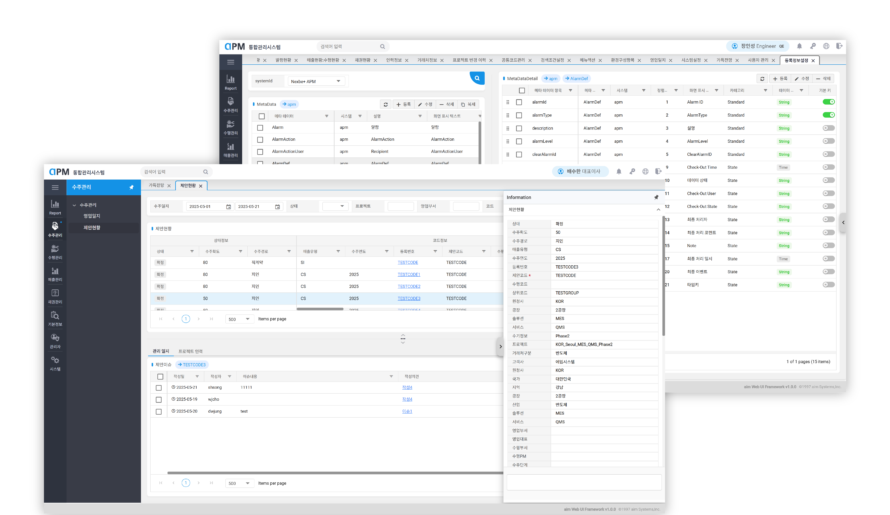

APM(Apm Project Management)
자사 사업관리시스템 퍼블리싱

Project Overview
기존 시스템의 정보 구조 및 시각요소를 전면 재설계하여, 인력/영업/수주 현황 데이터를 시각화한 사내 운영 시스템 개편 프로젝트 기존 내부 시스템의 UI와 정보 구조를 전면 개편하고, 인력·영업·수주 데이터 흐름에 최적화된 UI를 재설계한 프로젝트. Vue 및 Syncfusion 기반 UI 구현, 반응형 퍼블리싱, 필터 및 조회 기능 등 실사용 중심의 UI 설계에 기여함.
Challenges
- 새로은 페이지별 들어가야할 내용에 대한 제안문서작업
- 기능리스트 문서작성
업무내용
- 화면 UI를 전면적으로 개편하고, 정보 흐름에 따라 페이지를 재기획하여 개선 방향 제안 및 퍼블리싱 수행
- Syncfusion 기반 표/차트 컴포넌트 스타일 커스터마이징
- 조건별 필터, 조회 항목, 반응형 대응 등 주요 UI 흐름 일부 설계 및 구현
- Vue 기반으로 UI를 재구성하고, Syncfusion 컴포넌트를 활용해 API 연동 및 그리드 기능 구현에 참여